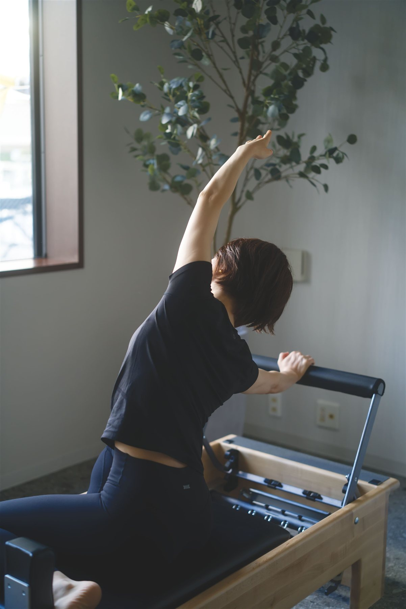
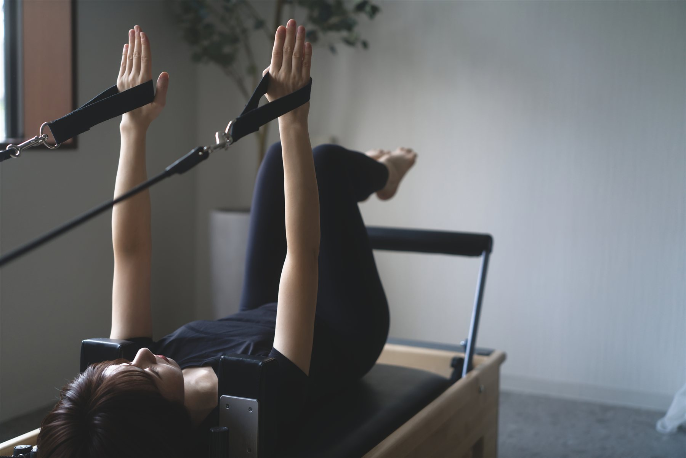
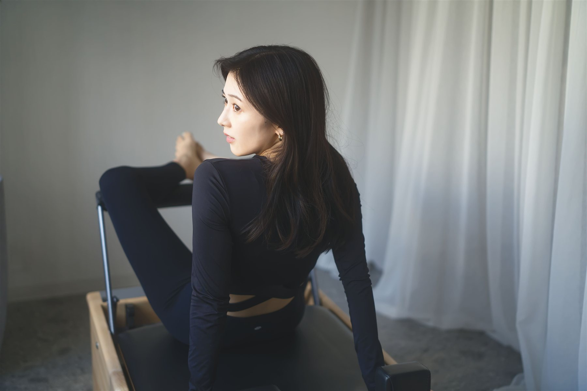
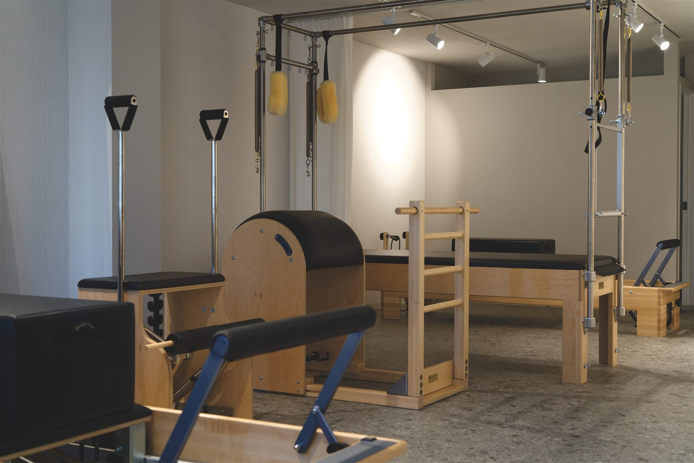
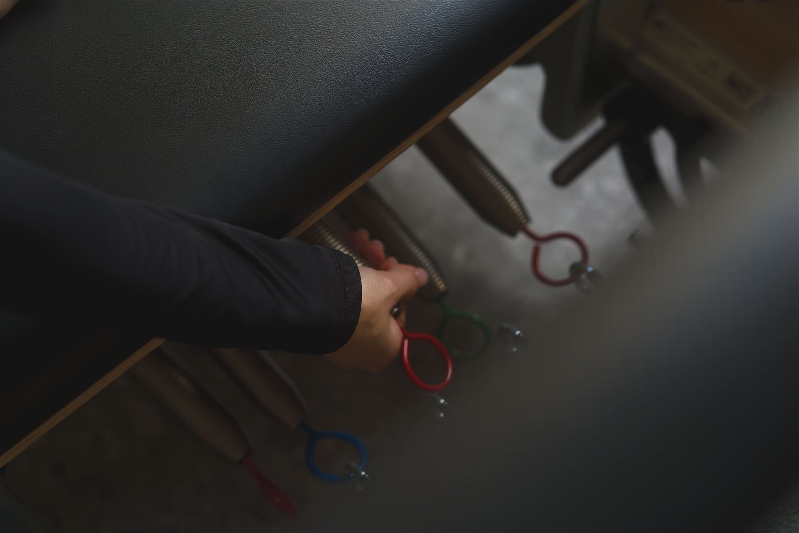
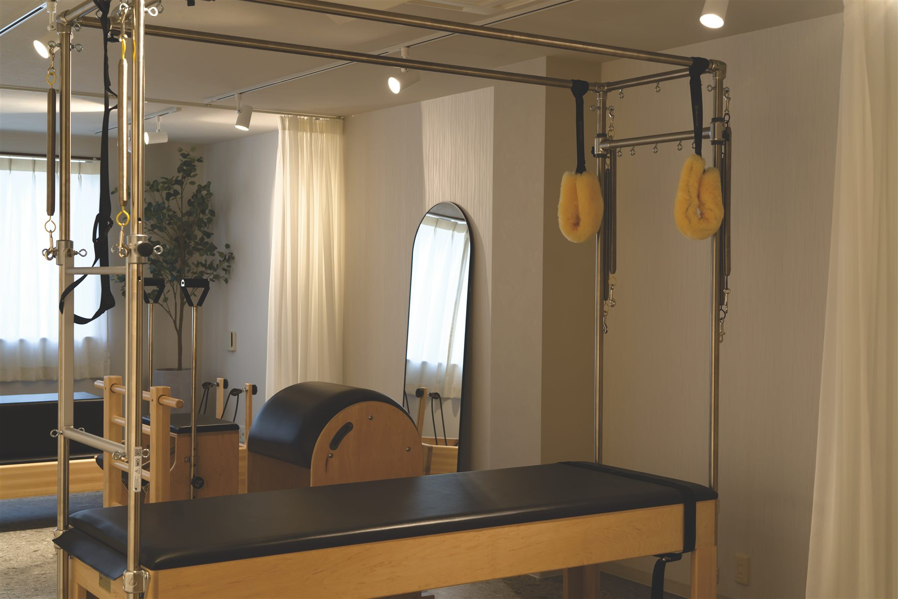

01 / RELEASE
ゆるめる。
呼吸を深めて、身体に意識を向ける。
 YOUR BODY. YOUR PACE.SCROLL TO BREATHE ↓
YOUR BODY. YOUR PACE.SCROLL TO BREATHE ↓01 / A LITTLE TIME FOR YOU
ふと鏡に映る猫背。デスクワークのあとの肩まわり。
忙しさのなかで、後回しにしてきた自分のこと。
Mayroは、一人ひとりの身体に向き合う
マンツーマンのマシンピラティススタジオ。
呼吸と動きを重ねながら、
あなたに合った整え方を、一緒に探します。
 Just for you.
Just for you.02 / THE MAYRO EXPERIENCE
動きの大きさも、呼吸のペースも、人それぞれ。
あなたの「今」に合わせて、無理なく、丁寧に。
身体の状態や目標に合わせたオーダーメイドのレッスン。小さな動きまでサポートします。
マシンのサポートを使いながら、呼吸と身体の使い方を一つずつ確かめます。
駅から徒歩1分。落ち着いた空間で、自分の身体に意識を向けるひとときを。
03 / BREATHE & MOVE
ただ鍛えるだけではなく、
身体のつながりを感じながら動く。
立つ、歩く、座る。その毎日を心地よく。

呼吸を深めて、身体に意識を向ける。

体幹を意識しながら、全身で動く。

今日の自分に、小さな発見を。
04 / YOUR PLACE TO RESET
やわらかな光。木の温もり。深まる呼吸。
Mayroで過ごす時間を、あなたの日常に。




05 / WE ARE HERE FOR YOU
「うまくできるかな」も、「こうなりたい」も。
まずは、あなたの言葉で聞かせてください。
女性インストラクターが、丁寧に寄り添います。
06 / YOUR FIRST LESSON
無料体験で、スタジオの雰囲気と
マンツーマンのレッスンを感じてください。
 01
01公式予約ページから、ご希望の日時を。
 02
02身体のお悩みや、目指したいことをお聞かせください。
03身体の状態に合わせて、一緒に動いてみましょう。
 04
04あなたのペースに合った通い方をご案内します。
開始10分前までにお越しください。動きやすいウェア上下・お飲み物をご持参ください。
07 / FIND YOUR RHYTHM
月に一度のリセットから、毎週の習慣まで。
暮らしに合ったプランをお選びいただけます。
PLAN 01
自分をいたわる時間を、月に一度。
PLAN 02
忙しい毎日にも、自分のペースで。
PLAN 03
整える時間を、毎週の習慣に。
PLAN 04
予定に合わせて、自由に通いたい方へ。
08 / QUESTIONS
一人ひとりに合わせたオーダーメイドのレッスンです。はじめての方も安心してお越しください。
動きやすいウェア上下とお飲み物をお持ちください。足元は靴下または裸足で大丈夫です。スタジオには更衣室がございます。
着替えなどの準備がございますので、開始10分前までにお越しください。
YOUR FIRST STEP
まずは、Mayroの空気とレッスンを。
あなたのための時間を、ここから。